Meu Editor de Arquivos — Manuel d'utilisation
Version 1.1.0
1. Bienvenue
Meu Editor de Arquivos est un éditeur léger pour tous ceux qui travaillent avec des textes, des notes, des scripts, des fichiers de configuration, des journaux et du code. Il fonctionne sous Windows 11, Debian 12 et 13 et Ubuntu 22.04 ou plus récent, et n'a pas besoin d'internet pour modifier vos fichiers.
Ce que vous y trouverez :
- des onglets pour plusieurs fichiers à la fois, avec récupération automatique de ce que vous avez saisi ;
- du Markdown qui s'ouvre mis en forme, avec un bouton pour modifier le texte ;
- un visionneur JSON dans lequel vous ouvrez et refermez des parties du fichier ;
- la recherche et le remplacement dans un fichier ou dans un dossier entier ;
- la coloration syntaxique de dizaines de langages, des extraits de texte (snippets) et des macros ;
- un compte utilisateur pour conserver des fichiers dans le cloud et les ouvrir sur d'autres ordinateurs ;
- une interface en six langues.
2. Découvrir l'écran
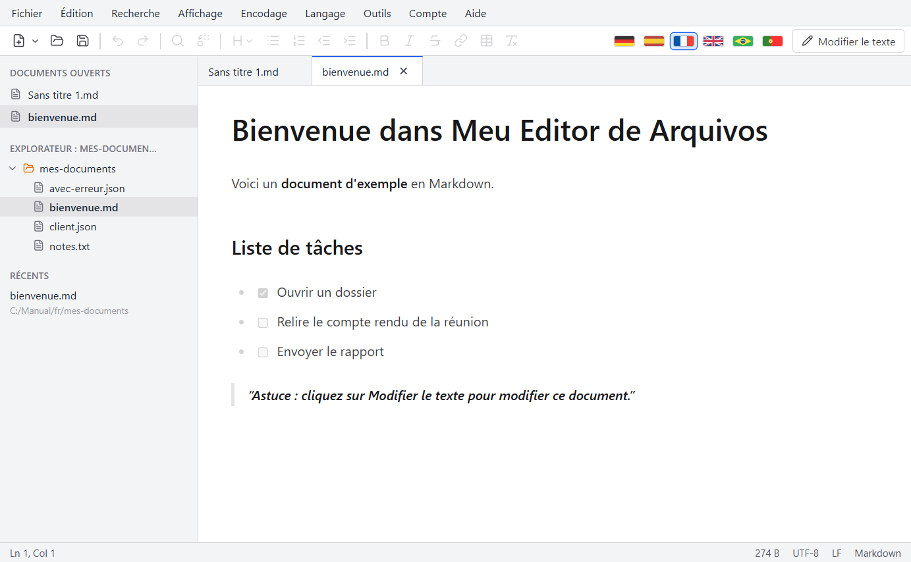
- Barre de menus (en haut) : Fichier, Édition, Recherche, Affichage, Encodage, Langage, Outils, Compte et Aide.
- Barre d'outils : raccourcis vers les commandes les plus courantes. Les boutons de mise en forme apparaissent quand le document est en Markdown. À droite se trouvent les drapeaux des langues et le bouton qui alterne entre l'aperçu et la modification.
- Barre latérale (à gauche) : les documents ouverts, l'explorateur du dossier ouvert et vos fichiers récents. Pour la masquer ou l'afficher, utilisez Ctrl+Shift+B.
- Onglets : chaque document a le sien. Un point (●) à côté du nom indique des modifications pas encore écrites dans le fichier.
- Zone d'édition : c'est là que vous lisez et écrivez.
- Panneau inférieur : affiche les résultats de la recherche dans les fichiers. Il s'ouvre tout seul quand vous utilisez la recherche.
- Barre d'état (en bas) : ligne et colonne du curseur, taille du fichier, encodage, type de fin de ligne et langage du document.
3. Créer et ouvrir des fichiers
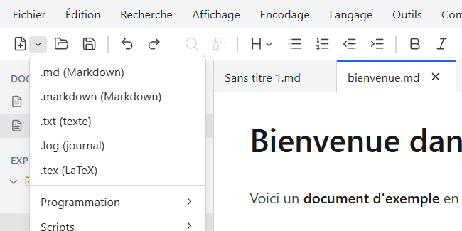
- Nouveau document : cliquez sur Nouveau ou appuyez sur Ctrl+N. Un nouveau document est en Markdown (.md). La flèche à côté du bouton permet de créer un autre type : .md (Markdown), .txt (texte), .py (Python) ou .sql (SQL).
- Ouvrir des fichiers : Fichier → Ouvrir ou Ctrl+O. Vous pouvez en choisir plusieurs à la fois. La limite est de 50 Mo par fichier.
- Ouvrir un dossier : Fichier → Ouvrir un dossier ou Ctrl+Shift+K. Le dossier apparaît dans l'explorateur de la barre latérale, et un clic sur un fichier l'ouvre. Utilisez Fermer le dossier pour le fermer.
- Fichiers récents : les derniers fichiers utilisés figurent dans la liste Récents de la barre latérale. Cliquez sur l'un d'eux pour le rouvrir.
Si un autre programme modifie un fichier que vous avez ouvert, l'application le recharge toute seule. Si ce document contient des modifications de votre part non enregistrées, elle vous demande d'abord. Si le fichier est supprimé ou déplacé, le nom de l'onglet devient rouge et barré.
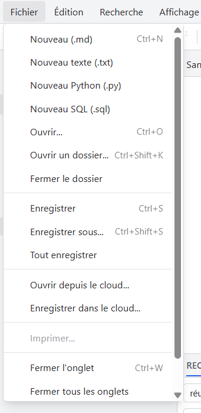
Organiser depuis la barre latérale
Faites un clic droit sur un dossier ou un fichier de la barre latérale, sur l'ordinateur ou dans le cloud :
- Renommer (dossiers et fichiers) : ouvre la fenêtre Renommer le dossier ou Renommer le fichier avec le nom actuel. Saisissez le nouveau nom et cliquez sur Modifier. Le nom ne peut pas être vide ni contenir
\ / : * ? " < > |. Les onglets ouverts de ce fichier, ou des fichiers du dossier, prennent le nouveau nom. - Changer la couleur du dossier (dossiers) : ouvre la fenêtre Couleur du dossier avec douze couleurs, la couleur actuelle étant cochée. Choisissez-en une autre et cliquez sur Changer la couleur. Les couleurs sont conservées sur cet ordinateur.
- Supprimer (dossiers) : disponible uniquement lorsque le dossier est vide.
Le dossier ouvert dans l'explorateur ne peut être ni renommé ni supprimé d'ici.
Chaque fichier a une icône selon son type : documents (.md, .txt, .tex), journaux, programmation, scripts, web, données et configuration (les mêmes sections que le bouton +) et une icône générique pour les autres.
Les zones de la barre latérale (Documents ouverts, Récents, celles du client d'API et les autres) ont un triangle à gauche du nom : cliquez dessus, ou sur le nom, pour ouvrir ou fermer la zone. Pour changer l'ordre, faites glisser le nom de la zone vers le haut ou vers le bas (au clavier, Alt+↑ et Alt+↓ avec le nom sélectionné). L'ordre et les zones fermées sont enregistrés sur cet ordinateur. Pour retirer une zone de la barre latérale, cliquez sur le X à droite de son nom, ou décochez-la dans Zones de la barre latérale, du menu Affichage ; cochez-la de nouveau pour qu'elle retrouve sa place.
4. Enregistrer et documents temporaires
- Enregistrer (Ctrl+S) écrit le document dans son fichier. Pour un nouveau document, l'application demande le nom et l'emplacement.
- Enregistrer sous (Ctrl+Shift+S) écrit une copie sous un autre nom ou à un autre endroit.
- Tout enregistrer écrit tous les documents qui ont des modifications.
Vous ne perdez pas ce que vous avez saisi. Quelques secondes après chaque modification, l'application conserve automatiquement tous les documents ouverts, y compris ceux qui n'ont jamais été enregistrés. Cela se fait que vous enregistriez ou non.
Quand vous fermez l'application, elle ne pose aucune question et ne supprime rien. À la prochaine ouverture, les onglets, le dossier et le texte non enregistré reviennent tels quels. Enregistrez quand vous voulez écrire dans le véritable fichier.
Quand vous fermez un onglet contenant des modifications, l'application demande s'il faut enregistrer, ne pas enregistrer ou annuler. Deux remarques : l'historique d'annulation (Ctrl+Z) n'est pas conservé d'une session à l'autre, et la récupération automatique conserve jusqu'à 100 Mo de texte non enregistré.
5. Modifier du texte
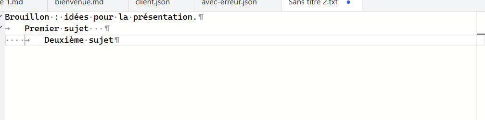
Les commandes de modification se trouvent dans Édition et les options d'affichage dans Affichage.
- Annuler et rétablir : Ctrl+Z et Ctrl+Y.
- Rechercher et remplacer dans le document : Ctrl+F et Ctrl+H. Pour aller à une ligne, utilisez Ctrl+G.
- Plusieurs curseurs : maintenez Ctrl et cliquez là où vous voulez un autre curseur, ou appuyez sur Ctrl+D pour sélectionner l'occurrence suivante du mot.
- Sélection en colonne : maintenez Maj+Ctrl et faites glisser la souris pour modifier plusieurs lignes dans la même colonne.
- Lignes : Alt+↑ et Alt+↓ déplacent la ligne ; Shift+Alt+↑ et Shift+Alt+↓ la dupliquent ; Ctrl+/ la commente ou la décommente.
- Ranger : Trier les lignes (A-Z), Trier les lignes (Z-A), Supprimer les lignes en double et Supprimer les espaces en fin de ligne.
- Caractères invisibles : affiche les espaces (·), les tabulations (→) et la fin de chaque ligne (¶). Très pratique pour repérer les espaces en trop.
- Retour automatique à la ligne et Tout replier / Tout déplier aident à lire les longs fichiers.
- Taille de la police : Ctrl++ l'agrandit, Ctrl+- la réduit et Ctrl+0 rétablit la taille par défaut.
- Indentation : dans Édition, choisissez entre espaces et tabulation, ainsi que la taille (2, 4 ou 8 colonnes).
- Plein écran (F11, dans Affichage) : affiche uniquement le document, sur tout l’écran. Appuyez de nouveau sur F11, ou cliquez sur le bouton en haut à droite, pour en sortir.
- Basculer entre le mode clair et sombre (dans Affichage) : passe du mode clair au mode sombre et inversement. Tant que vous n’avez pas choisi, l’application suit le thème du système d’exploitation ; votre choix est conservé pour la prochaine fois.
Vos préférences d'affichage sont conservées pour la prochaine fois. Les textes propres à l'éditeur, comme la zone de recherche (Ctrl+F) et la palette de commandes (F1), apparaissent en anglais.
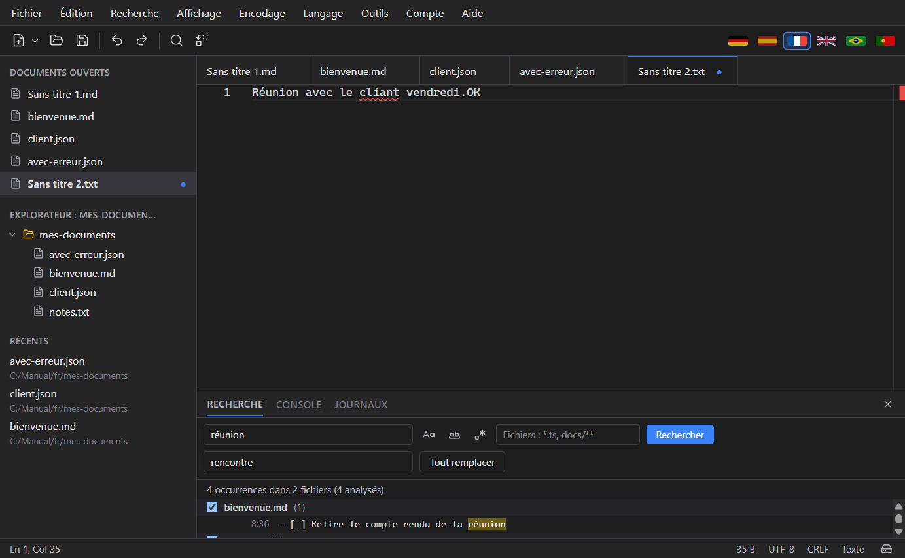
Lettres, espaces et fins de ligne
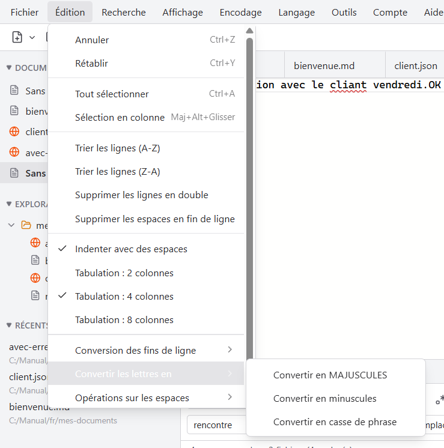
À la fin du menu Édition, trois sous-menus sont proposés :
- Conversion des fins de ligne : convertit les fins de ligne du document au format Windows (CRLF), Unix (LF) ou Mac (CR). Une conversion marque le document comme modifié ; il suffit d’enregistrer pour qu’elle prenne effet.
- Convertir les lettres en : avec du texte sélectionné, choisissez Convertir en MAJUSCULES, Convertir en minuscules ou Convertir en casse de phrase (seule la première lettre de chaque phrase passe en majuscule).
- Opérations sur les espaces : Supprimer les espaces à droite, Supprimer les espaces à gauche et Supprimer les espaces à droite et à gauche s’appliquent à la ligne du curseur (ou aux lignes sélectionnées). Supprimer les doubles espaces du document remplace deux espaces consécutifs ou plus par un seul dans tout le document, sans toucher à l’indentation en début de ligne.
MD5, SHA-1, SHA-256 et SHA-512
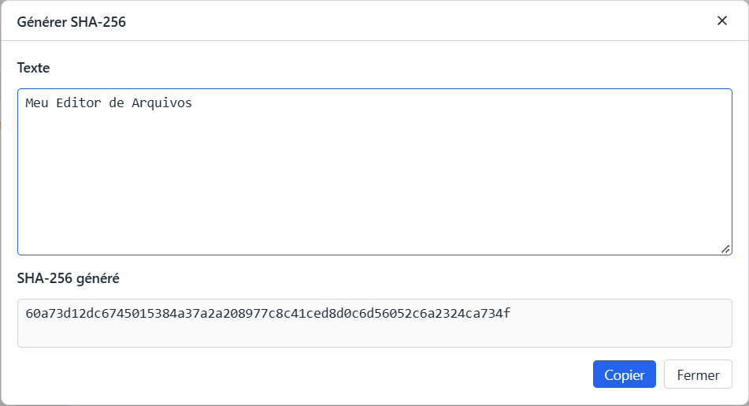
À la fin du menu Outils, chaque algorithme propose deux options :
- Générer : ouvre une fenêtre ; saisissez ou collez le texte et le résultat s’affiche aussitôt, juste en dessous. Copier place le résultat dans le presse-papiers.
- Générer à partir du texte sélectionné : calcule le résultat à partir du texte sélectionné dans le document et le place dans le presse-papiers, prêt à être collé. Un message s’affiche dans la barre d’état.
Terminal
Dans Outils → Ouvrir le terminal, un terminal s’ouvre juste sous le document, dans votre dossier personnel : PowerShell sous Windows et votre shell (généralement bash) sous Linux. Saisissez les commandes et voyez les résultats sur place ; le document reste ouvert au-dessus, et le séparateur entre les deux peut être déplacé.
- Chaque clic ouvre un autre terminal, dans son propre onglet (Terminal 1, Terminal 2…). Le × de l’onglet ferme le terminal ; la commande
exitaussi. - Avec du texte sélectionné dans le terminal, Ctrl+C le copie ; sans sélection, Ctrl+C interrompt la commande en cours. Ctrl+V colle.
- Tant que le curseur est dans le terminal, les touches lui sont envoyées (Ctrl+W, Ctrl+R…) au lieu des raccourcis de l’application.
- Les terminaux ne reviennent pas à la prochaine ouverture de l’application.
Correcteur orthographique
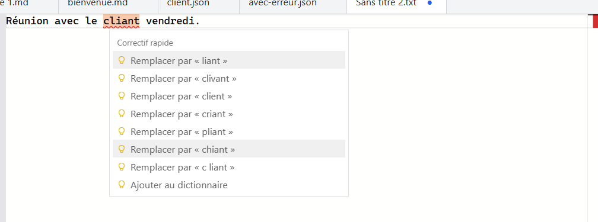
Dans les documents Markdown, texte (.txt) et LaTeX, les mots absents du dictionnaire sont soulignés en rouge. Le code, les liens, les adresses, les sigles et le texte entre accents graves ne sont pas vérifiés, et les fichiers journaux et CSV sont ignorés.
- Placez le curseur sur le mot et appuyez sur Ctrl+. (ou faites un clic droit et choisissez Suggestions d’orthographe) pour voir les suggestions. Choisissez-en une pour remplacer le mot.
- Ajouter au dictionnaire fait accepter le mot désormais, dans toutes les langues.
- Outils → Vérifier l’orthographe (ou F7) active et désactive la vérification.
- Le correcteur utilise la langue de l’interface. Pour vérifier dans une autre langue, choisissez dans Outils → Orthographe utilisée l’une des options Orthographe : Deutsch, Orthographe : English… : il existe des dictionnaires allemand, espagnol, français, anglais, portugais du Brésil et portugais du Portugal. Orthographe : langue de l’interface revient à la langue de l’interface.
Les dictionnaires sont fournis avec l’application : le correcteur fonctionne sans Internet.
Assistant IA (Ollama)
L'Assistant IA utilise un modèle d'IA qui tourne sur votre propre ordinateur grâce à Ollama (ollama.com) : rien ne part sur internet. Ouvrez le panneau avec Outils → Assistant IA (Ollama) ou Ctrl+Maj+I. Si Ollama n'est pas encore sur l'ordinateur, le panneau guide l'installation : sous Windows, Installer Ollama télécharge l'installateur officiel, vérifie sa signature numérique et ouvre sa fenêtre pour que vous terminiez ; sous Linux, Ouvrir dans le terminal saisit la commande officielle dans le terminal de l'application pour que vous la vérifiiez et la confirmiez (elle nécessite sudo). Si Ollama est arrêté, utilisez Démarrer Ollama. Choisissez ensuite un modèle dans Télécharger un modèle et suivez le téléchargement ; Supprimer le modèle libère de l'espace.
- Choisissez le modèle, saisissez votre question et suivez la réponse pendant sa génération ; Arrêter l'interrompt et Nouvelle conversation repart de zéro.
- Les Actions rapides portent sur la sélection (ou le document entier) : Expliquer, Améliorer le texte, Corriger les erreurs, Résumer, Traduire, Générer commentaires/documentation et Écrire des tests.
- Dans les blocs de code de la réponse, utilisez Copier, Insérer au curseur ou Remplacer la sélection.
- La conversation reste uniquement en mémoire et disparaît à la fermeture de l'application. Par défaut, l'assistant ne communique qu'avec un Ollama de cet ordinateur.
6. Markdown
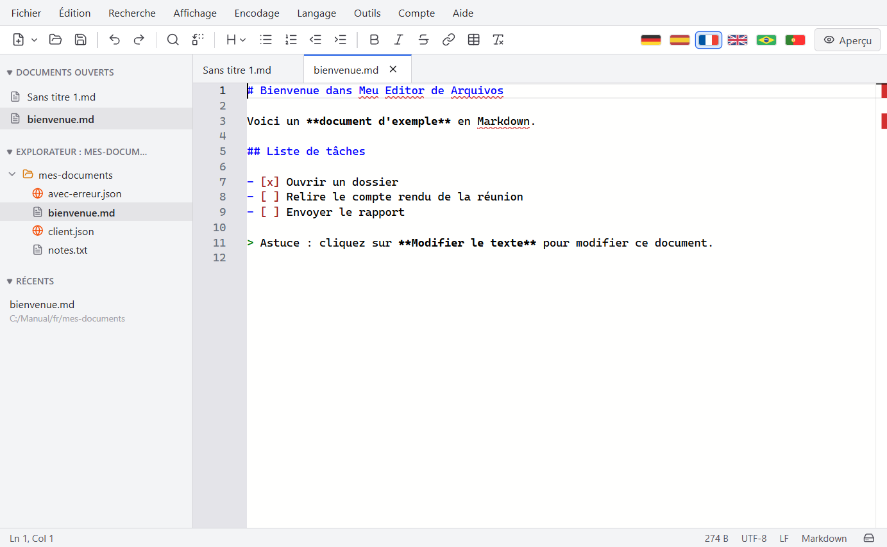
Les fichiers Markdown (.md) s’ouvrent mis en forme, et vous pouvez continuer à écrire directement dans le texte mis en forme. La barre d’outils applique la mise en forme au curseur ou à la sélection : titres, liste à puces, liste numérotée, retrait, gras (Ctrl+B), italique (Ctrl+I), barré (Ctrl+Shift+X), lien, tableau et effacer la mise en forme. Ctrl+Z et Ctrl+Y annulent et rétablissent.
Pour voir et modifier le code Markdown, cliquez sur Modifier le texte (ou appuyez sur Ctrl+Shift+E) ; pour revenir au texte mis en forme, cliquez sur Aperçu. La barre de mise en forme fonctionne dans les deux modes.
Quand vous modifiez le texte mis en forme, le Markdown est réécrit dans un style standard (par exemple, des listes avec -). Les documents qui contiennent du HTML sont en lecture seule dans ce mode, pour ne pas perdre le HTML : modifiez-les avec Modifier le texte. Pour ouvrir un lien dans le navigateur, utilisez Ctrl+clic. Les images apparaissent sous forme d’étiquette avec leur nom, et leur adresse est conservée dans le fichier.
7. Fichiers JSON
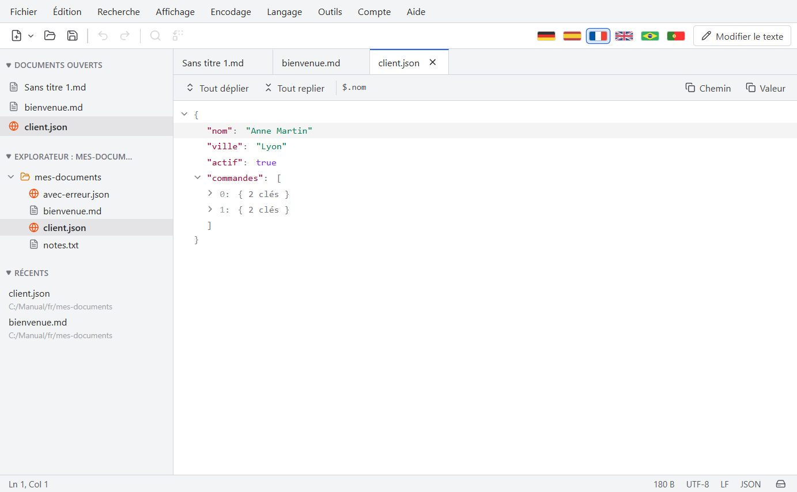
Les fichiers .json s'ouvrent en arborescence. Cliquez sur la flèche d'un élément pour ouvrir ou refermer cette partie. Utilisez Tout déplier et Tout replier pour tout ouvrir ou tout refermer. Quand vous cliquez sur un élément, la barre affiche son chemin, et vous pouvez copier le Chemin ou la Valeur. Les très longues listes s'affichent par petites parties, avec un bouton pour en voir davantage.
Pour modifier, cliquez sur Modifier le texte. En mode modification, le bouton Formater le JSON (Shift+Alt+F) remet le fichier en ordre.
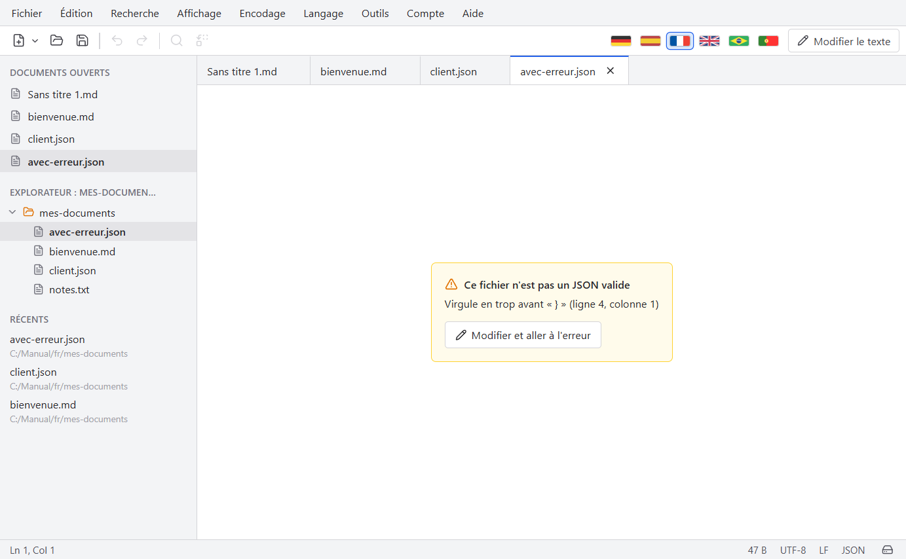
Si le fichier contient une erreur, l'application explique le problème et indique la ligne et la colonne. Le bouton Modifier et aller à l'erreur ouvre l'éditeur directement à l'endroit de l'erreur.
8. Client d'API
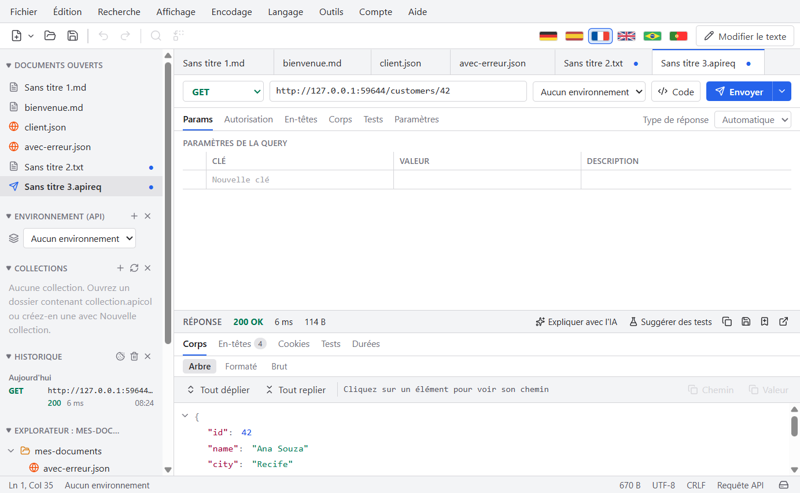
Le Client d'API sert à tester des services sur internet (API) : vous construisez une requête, vous l'envoyez et vous vérifiez la réponse sans quitter l'éditeur. Chaque requête est un fichier .apireq, que vous pouvez enregistrer, copier et versionner comme n'importe quel autre.
Ouvrir
- Appuyez sur Ctrl+Shift+A, ou utilisez Outils → Tester des requêtes et des API → Client API.
- Ou utilisez Fichier → Nouveau fichier de requête API (.apireq).
Le document s'ouvre dans le Constructeur. Pour voir et modifier le fichier sous forme de texte (JSON), cliquez sur Modifier le texte.
Construire la requête
Choisissez la Méthode (GET, POST…) et saisissez l'adresse dans URL de la requête. Les données sont réparties en onglets :
- Params : les paramètres de la query. Ce que vous saisissez dans l'URL apparaît ici, et inversement.
- Autorisation : comment vous identifier auprès du service (voir plus bas).
- En-têtes : les en-têtes de la requête.
- Corps : le contenu envoyé. Dans Type de corps, vous choisissez entre JSON, XML, texte, HTML, formulaire, formulaire avec fichiers, fichier binaire, GraphQL, SOAP ou aucun corps.
- Paramètres : délai d'attente, redirections, proxy, certificats et Vérifier le certificat TLS. Ne désactivez la vérification que dans des environnements de test.
Dans n'importe quel champ, utilisez {{nom}} pour insérer une variable de l'environnement actif.
Envoyer et lire la réponse
Cliquez sur Envoyer ou appuyez sur Ctrl+Enter. Pendant que la requête est en cours, Échap annule l'envoi. Le bouton en forme de flèche à côté propose Envoyer et télécharger dans un fichier, qui enregistre le corps directement dans un fichier (utile pour les réponses volumineuses ou binaires).
La réponse affiche le statut, la durée et la taille, avec les onglets Corps, En-têtes, Cookies, Tests et Durées. Le corps peut s'afficher en Arbre (pour ouvrir et refermer les parties du JSON), Formaté ou Brut. Utilisez Enregistrer la réponse (.apiresp) pour conserver la réponse dans un fichier .apiresp, et Ouvrir le corps dans un nouvel onglet pour la modifier comme un document ordinaire.
Autorisation
Dans l'onglet Autorisation, choisissez dans Type : API Key, Basic Auth, Bearer Token, OAuth 1.0 ou OAuth 2.0. OAuth 2.0 propose les flux Authorization Code (PKCE), Client Credentials, Device Code et Password (hérité) ; cliquez sur Obtenir le jeton et, si nécessaire, le navigateur du système s'ouvre pour que vous autorisiez l'accès. Avec Hériter de la collection, la requête utilise l'autorisation définie dans la collection.
Pour les mots de passe et les jetons, utilisez une variable secrète (voir « Environnements et secrets ») : ainsi, la valeur n'est jamais écrite dans le fichier de la requête.
Tests et extractions
Dans l'onglet Tests :
- Assertions : des règles vérifiées à chaque envoi, comme « le statut est égal à 200 », « le corps contient un texte » ou « le JSONPath existe ». Le résultat apparaît dans l'onglet Tests de la réponse.
- Extractions : elles conservent une valeur de la réponse (un jeton, par exemple) dans une variable de l'environnement, pour l'utiliser dans les requêtes suivantes.
Environnements et secrets
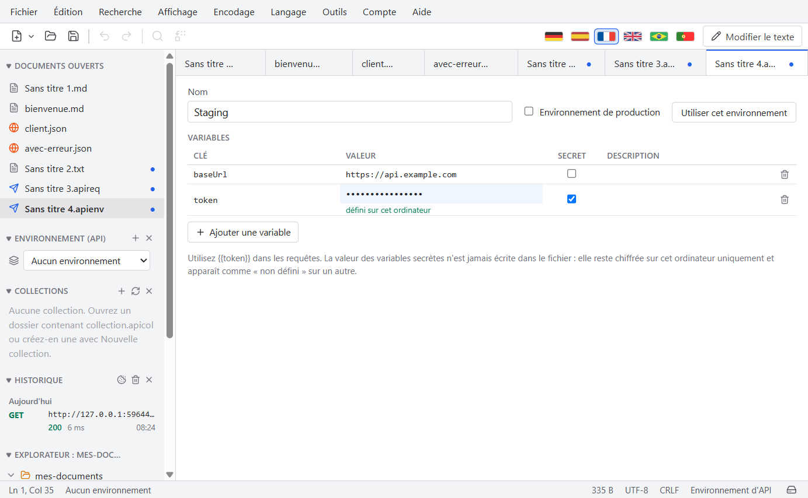
Un environnement rassemble des variables, comme l'adresse du serveur de test et celle de la production. Utilisez Outils → Tester des requêtes et des API → Environnements d'API (nouvel environnement) pour en créer un (fichier .apienv) et choisissez l'environnement actif dans le sélecteur Environnement actif.
- Cochez Secret pour les variables sensibles. La valeur est chiffrée sur cet ordinateur et ne va pas dans le fichier .apienv.
- Cochez Environnement de production pour un environnement de production : l'application demande une confirmation avant d'envoyer POST, PUT, PATCH et DELETE.
- Les cookies reçus sont séparés par environnement ; consultez-les ou supprimez-les dans Outils → Tester des requêtes et des API → Cookies d'API.
Collections et historique
Une collection est un dossier contenant les requêtes et le fichier .apicol, qui conserve l'autorisation et les variables communes. Dans la barre latérale, la section Collections affiche les collections des dossiers ouverts ; avec le clic droit, vous pouvez créer des requêtes et des dossiers, Exécuter, Exporter, Documenter (génère la documentation de la collection) et Paramètres de la collection.
L'Historique (aussi dans Outils → Tester des requêtes et des API → Historique d'API) liste les dernières requêtes envoyées, et vous pouvez l'effacer quand vous le souhaitez.
Importer, exporter et générer du code
- Outils → Tester des requêtes et des API → Importer des requêtes (curl, Postman, OpenAPI) importe des requêtes depuis curl, Postman, OpenAPI/Swagger, Insomnia, HAR et des fichiers .http. Cliquez sur Analyser pour voir ce qui sera importé, puis choisissez Importer comme collection ou Ouvrir dans des onglets. Coller une commande curl dans l'URL propose aussi l'importation.
- Exporter enregistre la collection au format Postman, OpenAPI, HAR, .http ou curl. Les valeurs des variables secrètes ne sont jamais exportées.
- Le bouton Code ouvre Générer du code et affiche la requête dans plusieurs langages, prête à copier.
Exécuter une collection
Dans Exécuter, choisissez les requêtes, l'environnement, le nombre d'itérations et le délai entre elles. Un fichier de données (CSV ou JSON) répète l'exécution avec les valeurs de chaque ligne, et Arrêter au premier échec s'arrête à la première erreur. Cliquez sur Exécuter : le résultat s'ouvre sous forme de rapport (.apirun), avec les totaux, les durées et les tests de chaque requête. Avec Exporter, le rapport peut être enregistré en JUnit XML, HTML ou Markdown.
GraphQL
Dans Type de corps, choisissez GraphQL pour écrire la Requête et les Variables (JSON). Avec Charger le schéma, l'application lit le schéma du serveur, affiche la documentation des types et propose l'autocomplétion.
Lorsque l'opération choisie est une subscription, le bouton S'abonner apparaît : l'application ouvre un WebSocket (protocole graphql-transport-ws) vers l'adresse de la requête et affiche les événements reçus sous l'éditeur. Cliquez sur Arrêter pour y mettre fin.
SOAP et WSDL
Dans Type de corps, choisissez SOAP, la Version (1.1 ou 1.2) et la SOAPAction ; Modèle d'enveloppe remplit une enveloppe vide. Pour créer les requêtes à partir d'un service, utilisez Outils → Tester des requêtes et des API → Importer des requêtes (curl, Postman, OpenAPI) avec le fichier WSDL : chaque opération devient une requête, avec une enveloppe d'exemple. Dans les tests et les extractions, la cible XPath lit les réponses XML (par exemple, //*[local-name()='Resultat']).
WebSocket
Utilisez Outils → Tester des requêtes et des API → WebSocket (nouvelle connexion) pour créer une connexion (fichier .apiws). Saisissez l'URL du WebSocket (ws:// ou wss://), les en-têtes et les sous-protocoles, puis cliquez sur Se connecter. Rédigez le message (texte, JSON ou binaire en base64) et envoyez-le avec Ctrl+Entrée. Le Journal affiche les messages envoyés et reçus, avec l'heure et la taille ; vous pouvez le filtrer, le mettre en pause et le vider. Utilisez Enregistrer le message pour garder les messages que vous envoyez souvent.
Serveur mock
Un serveur mock répond à la place de la vraie API, avec des réponses que vous connaissez déjà. Dans la réponse d'une requête enregistrée, cliquez sur Enregistrer comme exemple : l'application range l'exemple à côté de la requête. Ensuite, d'un clic droit sur la collection, choisissez Démarrer le mock (ou Outils → Tester des requêtes et des API → Serveur mock). Les routes viennent des exemples enregistrés ou d'un fichier OpenAPI ; ajustez le statut et le délai de chacune et cliquez sur Démarrer. Le serveur ne répond que sur cet ordinateur, sauf si vous cochez Écouter sur le réseau local, et s'arrête tout seul après 8 heures sans appel.
gRPC
Utilisez Outils → Tester des requêtes et des API → gRPC (nouvel appel) pour créer un appel (fichier .apigrpc). Indiquez l'Adresse du serveur gRPC (hôte:port), cochez Utiliser TLS si le serveur l'exige, et choisissez la Source des services : Réflexion du serveur ou Fichiers .proto. Cliquez sur Charger les services, choisissez le service et la méthode, puis utilisez Utiliser le modèle pour commencer le message JSON. Les appels simples et en streaming serveur utilisent Invoquer ; en streaming client ou bidirectionnel, utilisez Démarrer, Envoyer et Terminer l'envoi. Les messages, les métadonnées et le statut apparaissent dans la liste des événements.
Moniteurs
Un moniteur relance l'exécution d'une collection toutes les quelques minutes et envoie une notification système en cas d'échec (puis de nouveau quand tout repasse). D'un clic droit sur la collection, choisissez Surveiller (ou Outils → Tester des requêtes et des API → Moniteurs d'API), réglez l'intervalle, l'environnement et les requêtes, puis enregistrez. Le graphique montre la durée de chaque exécution, les échecs en rouge ; Exécuter maintenant la lance tout de suite. Les moniteurs ne tournent que lorsque l'application est ouverte et reprennent seuls à sa réouverture.
Scripts
Dans l'onglet Tests, sous les assertions, se trouvent deux scripts JavaScript facultatifs : Avant l'envoi (peut modifier l'URL, les en-têtes et le corps) et Après la réponse (peut vérifier la réponse avec test et expect et garder des valeurs avec env.set). L'alias pm accepte l'essentiel des scripts Postman. Les scripts s'exécutent isolés, sans réseau, fichiers ni accès à l'ordinateur, avec des limites de temps et de mémoire ; ce qu'ils écrivent avec console.log apparaît dans le bloc Console de la réponse.
Les scripts que vous n'avez pas écrits (importés ou reçus d'une autre personne) ne s'exécutent pas d'eux-mêmes : la requête affiche un avis avec Faire confiance à cette collection. La confiance ne vaut que sur cet ordinateur et tombe si les scripts changent.
IA dans le client d'API
Dans le panneau de la réponse, Expliquer avec l'IA demande à l'assistant d'expliquer la réponse et Suggérer des tests propose des assertions pour l'onglet Tests. D'un clic droit sur une collection, Générer la documentation avec l'IA rédige sa documentation. Les en-têtes d'authentification et les valeurs secrètes ne sont pas envoyés au modèle.
Dans les scripts, pm.sendRequest effectue des requêtes auxiliaires (par exemple pour obtenir un jeton), avec les mêmes règles de secrets que les requêtes normales et au maximum 10 par script.
Sécurité
- Toutes les requêtes partent de votre propre ordinateur, via l'application ; rien ne passe par nos serveurs.
- Les mots de passe, les jetons et les valeurs secrètes sont conservés dans le coffre du système d'exploitation (chiffrés). Si le système n'a pas de coffre, ils restent uniquement en mémoire et sont perdus à la fermeture de l'application.
- Ces valeurs ne vont jamais dans les fichiers (.apireq, .apienv, .apicol), ni dans les exports, la génération de code, les journaux ou le cloud. L'historique et les cookies restent eux aussi uniquement sur cet ordinateur.
- Seuls les réponses enregistrées et les rapports d'une collection peuvent être synchronisés avec le cloud, et uniquement si vous activez Synchroniser les réponses enregistrées et les rapports via le cloud.
9. Recherche dans les fichiers
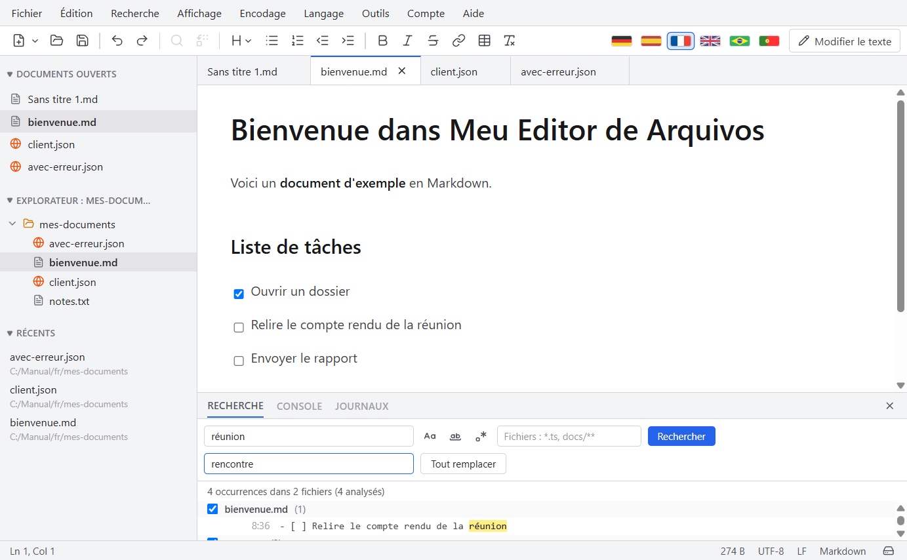
Ouvrez un dossier et choisissez Recherche → Rechercher dans les fichiers (Ctrl+Shift+F). Le panneau inférieur s'ouvre.
- Saisissez le texte et cliquez sur Rechercher (ou appuyez sur Entrée).
- Affinez la recherche avec les trois boutons voisins : Respecter la casse, Mot entier et Expression régulière.
- Pour limiter les fichiers, écrivez un filtre, par exemple
*.md, docs/**. - Les résultats apparaissent regroupés par fichier, avec la ligne et la colonne. Cliquez sur un résultat pour ouvrir le fichier et sélectionner le passage.
Pour remplacer le texte, saisissez le nouveau dans le champ de remplacement et cliquez sur Tout remplacer. Décochez les fichiers qui ne doivent pas changer. L'application demande une confirmation, car le remplacement est écrit directement dans les fichiers et ne peut pas être annulé depuis l'éditeur. Les fichiers ouverts qui ont des modifications non enregistrées sont ignorés, pour que vous ne perdiez pas votre travail.
La recherche n'entre pas dans des dossiers comme node_modules et .git, ni dans les fichiers binaires ou de plus de 5 Mo. Elle affiche au maximum 5 000 occurrences à la fois.
10. Langage, encodage et fins de ligne
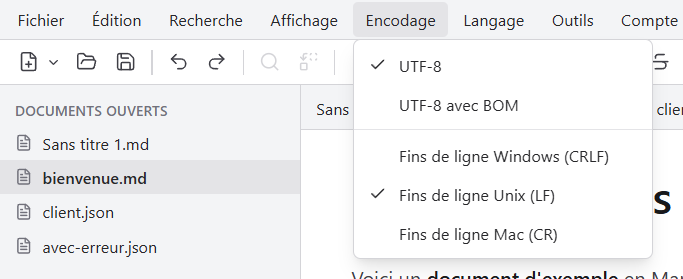
- Langage : l'application choisit le langage d'après l'extension du fichier et utilise des couleurs pour faciliter la lecture. Pour changer le langage d'un document, ouvrez le menu et choisissez-en un autre.
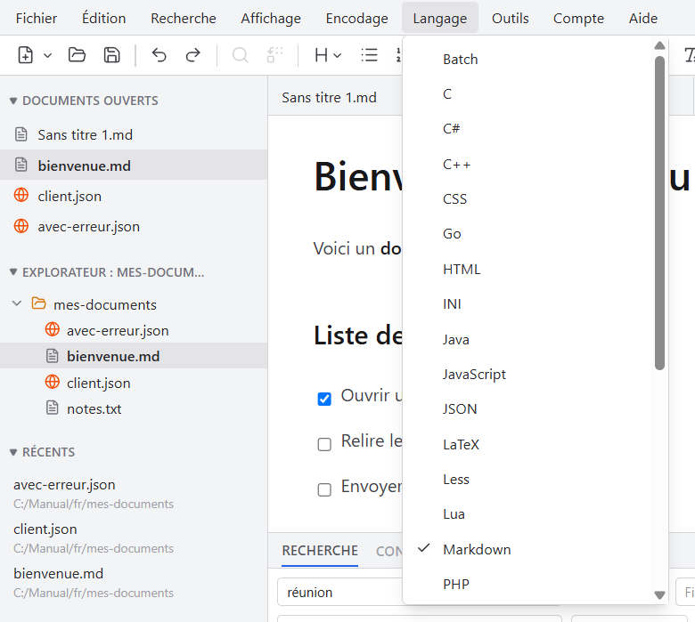
- Encodage : convertissez le document en UTF-8 ou en UTF-8 avec BOM, et choisissez les fins de ligne Windows (CRLF), Unix (LF) ou Mac (CR). Une conversion marque le document comme modifié ; il suffit d'enregistrer pour qu'elle soit effective.
- Mise en forme automatique supprime les espaces doubles du document (l'indentation des lignes est conservée) et le met en forme selon le standard du langage : Python comme Python (PEP 8), C et C++ en style LLVM, Java en style Google, C# en style Microsoft, Go avec gofmt, et JavaScript, TypeScript, JSON, CSS, HTML, Markdown, YAML, PHP et XML avec Prettier ; Lua, Shell et SQL aussi. Fonctionne sans internet. Pour les langages sans outil de mise en forme (Rust, PowerShell, Batch, LaTeX, INI, TOML et texte), seuls les espaces doubles sont supprimés, et la barre d'état l'indique. Si le code contient une erreur de syntaxe, une fenêtre indique la ligne de l'erreur.
- En Python, si l'indentation manque, elle est déduite : après une ligne terminée par
:le bloc ouvre un niveau ; les blocsif,for,while,tryetwithprennent la ligne suivante ; le corps d'undefva jusqu'à une ligne vide ou unreturn. Vérifiez le résultat, car en Python l'indentation change ce que fait le programme. Les guillemets restent tels que vous les avez écrits. Attention : les espaces doubles à l'intérieur des textes entre guillemets sont aussi supprimés. Ctrl+Z annule tout d'un coup. - Encoder/Décoder l’URL encode le texte sélectionné au format des adresses web (
ma pagedevientma%20page) ; si le texte est déjà encodé, il le décode. Dans une adresse complète (https://…), les séparateurs: / ? & = #sont conservés.
L'encodage et la fin de ligne actuels s'affichent dans la barre d'état.
11. Snippets et macros
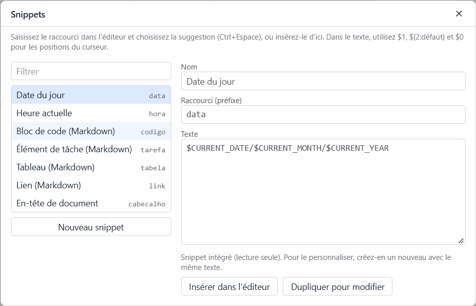
Les snippets sont des extraits de texte tout prêts. Ouvrez Outils → Snippets. L'application en fournit déjà quelques-uns : data, hora, codigo, tarefa, tabela, link et cabecalho. Pour en utiliser un, saisissez son raccourci dans l'éditeur et choisissez la suggestion (ou appuyez sur Ctrl+Espace), ou cliquez sur Insérer dans l'éditeur dans la fenêtre. Pour créer le vôtre, cliquez sur Nouveau snippet et donnez-lui un nom, un raccourci et le texte. Dans le texte, $1 et ${2:défaut} marquent les endroits où le curseur s'arrête, et $0 est la position finale. Les snippets fournis ne peuvent pas être modifiés, mais vous pouvez les dupliquer.
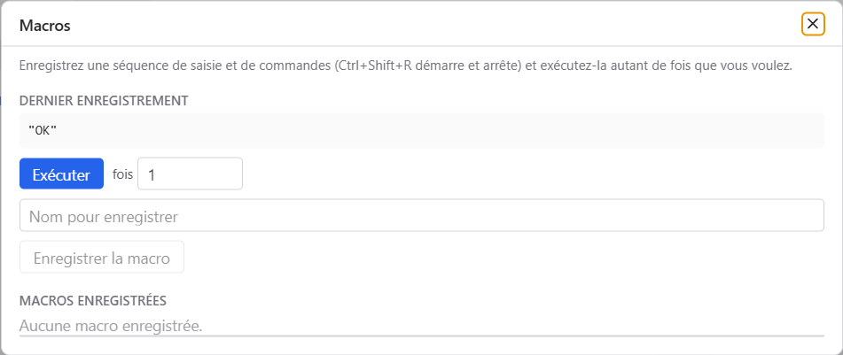
Les macros répètent une séquence que vous avez effectuée. Appuyez sur Ctrl+Shift+R pour commencer l'enregistrement, saisissez ou modifiez ce que vous voulez, puis appuyez de nouveau sur Ctrl+Shift+R pour l'arrêter. Ensuite, Ctrl+Shift+M exécute le dernier enregistrement. Dans Macros, vous choisissez le nombre de répétitions et pouvez enregistrer la macro sous un nom. Sont enregistrés : le texte saisi, le texte collé, les touches fléchées, Début, Fin, Retour arrière, Suppr, Tab, Entrée et les commandes des menus. Les clics de souris et Ctrl+Z ne sont pas enregistrés.
12. Compte et fichiers dans le cloud
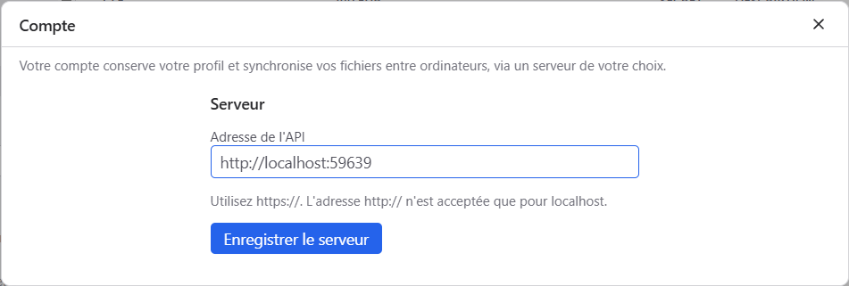
Avec un compte, vous conservez des fichiers dans le cloud et les ouvrez sur d'autres ordinateurs. Ouvrez le menu Compte.
- Adresse du serveur : la première fois, saisissez l'adresse que votre entreprise ou votre administrateur vous a communiquée. Elle commence par
https://. - Créer un compte : cliquez sur Créer un compte et renseignez votre e-mail, votre nom et un mot de passe d'au moins 10 caractères.
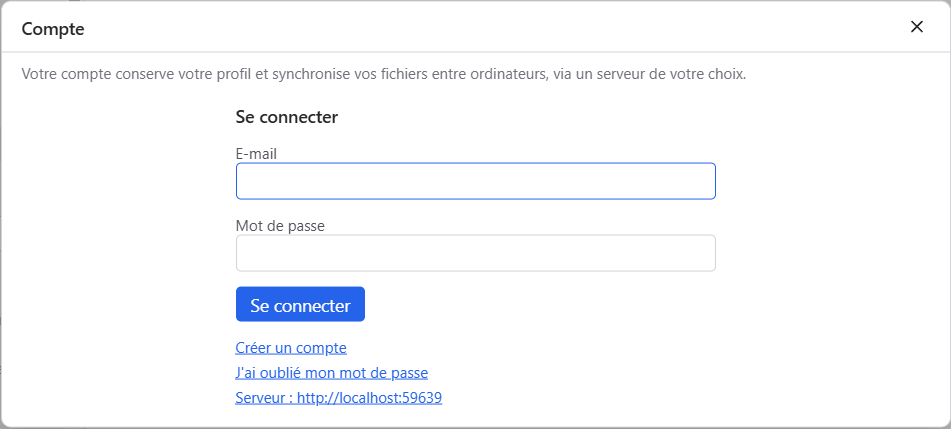
- Se connecter : utilisez votre e-mail et votre mot de passe. Si vous oubliez le mot de passe, cliquez sur J'ai oublié mon mot de passe : vous recevez un code par e-mail et choisissez un nouveau mot de passe.
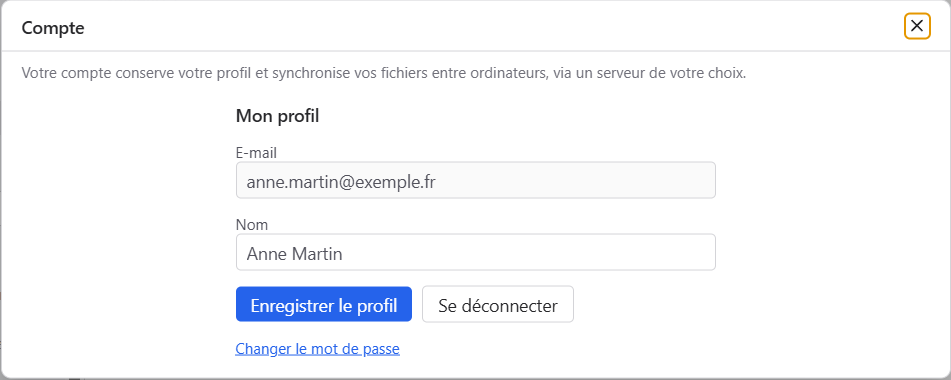
- Profil : dans Compte, ouvrez votre profil pour changer le nom, changer le mot de passe ou vous déconnecter. Quand vous changez le mot de passe, vos autres ordinateurs doivent se reconnecter.
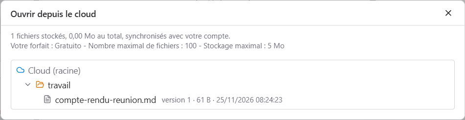
- Enregistrer dans le cloud : Fichier → Enregistrer dans le cloud. Choisissez le chemin, par exemple
travail/compte-rendu.md. - Ouvrir depuis le cloud : Fichier → Ouvrir depuis le cloud. En haut s'affichent le nombre de fichiers enregistrés, leur taille totale et les limites de votre forfait. Les fichiers sont classés par dossier, comme dans la barre latérale, avec la version, la taille et la date de dernière modification en gris. Double-cliquez sur un fichier pour l'ouvrir ; faites glisser fichiers et dossiers vers un autre dossier (ou vers Cloud (racine)), comme dans la barre latérale, et utilisez le clic droit pour Renommer, Changer la couleur du dossier et Supprimer. Dans un document ouvert depuis le cloud, Ctrl+S enregistre de nouveau dans le cloud.
Si le fichier a changé dans le cloud depuis la dernière fois, l'application vous prévient et demande si vous voulez l'écraser. Chaque fichier peut peser jusqu'à 10 Mo. Si votre système n'a pas de coffre d'identifiants, l'application vous prévient que vous devrez vous reconnecter à chaque ouverture.
Lorsque vous êtes connecté, la barre d'état affiche, à gauche de l'icône du cloud, le nombre de fichiers enregistrés et l'espace que vous utilisez dans le cloud, en Mo avec deux décimales (par exemple, Fichiers : 3 Stockage : 1.25 MB). Chaque valeur passe à l'orange à 90 % de la limite de votre forfait et au rouge à 100 %. À la limite de fichiers, le cloud n'accepte plus de nouveaux fichiers ; à la limite de stockage, il n'accepte ni nouveaux fichiers ni modifications qui augmentent l'espace utilisé. Dans ces cas, le message Avertissement s'affiche et rien n'est enregistré ; mettre à jour un fichier sans l'agrandir reste possible, et supprimer des fichiers libère le forfait. Le total comprend tous vos fichiers dans le cloud et les textes des documents non encore enregistrés, conservés pour continuer sur un autre ordinateur. La valeur change à chaque enregistrement ou suppression. Un fichier du cloud ouvert sans modifications n'occupe pas d'espace supplémentaire ; seul le texte non enregistré est conservé.
Si le même document est modifié sur deux ordinateurs avant la synchronisation, chaque ordinateur garde son texte, et la version de l'autre s'ouvre dans un nouvel onglet avec « (conflit – autre ordinateur) » dans le nom, pour que rien ne soit perdu.
13. Langues
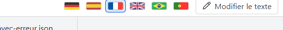
L'application est disponible en allemand, espagnol, français, anglais, portugais (Brésil) et portugais (Portugal). Elle s'ouvre dans la langue de votre système ; s'il n'y a pas de traduction, elle s'ouvre en anglais. Pour changer, cliquez sur le drapeau de la langue, à gauche du bouton d'aperçu. Le changement est immédiat et conservé pour la prochaine fois. Ce manuel s'ouvre dans la langue utilisée.
14. Raccourcis clavier
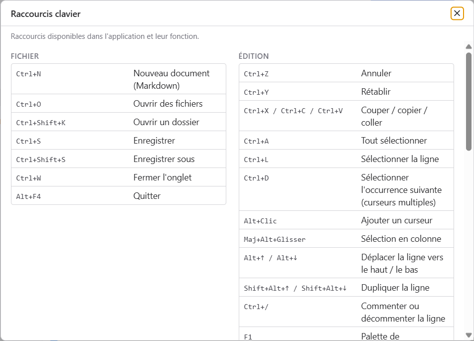
Pour voir la liste dans l'application, ouvrez Aide → Raccourcis clavier. Les raccourcis disponibles :
Fichier
| Ctrl+N | Nouveau document (Markdown) |
| Ctrl+O | Ouvrir des fichiers |
| Ctrl+Shift+K | Ouvrir un dossier |
| Ctrl+S | Enregistrer |
| Ctrl+Shift+S | Enregistrer sous |
| Ctrl+W | Fermer l'onglet |
| Alt+F4 | Quitter |
Édition
| Ctrl+Z | Annuler |
| Ctrl+Y | Rétablir |
| Ctrl+X / Ctrl+C / Ctrl+V | Couper / copier / coller |
| Ctrl+A | Tout sélectionner |
| Ctrl+L | Sélectionner la ligne |
| Ctrl+D | Sélectionner l'occurrence suivante (curseurs multiples) |
| Ctrl+Clic | Ajouter un curseur |
| Maj+Ctrl+Glisser | Sélection en colonne |
| Alt+↑ / Alt+↓ | Déplacer la ligne vers le haut / le bas |
| Shift+Alt+↑ / Shift+Alt+↓ | Dupliquer la ligne |
| Ctrl+/ | Commenter ou décommenter la ligne |
| F1 | Palette de commandes |
| F7 | Vérifier l’orthographe |
| Ctrl+. | Suggestions d’orthographe |
Recherche
| Ctrl+F | Rechercher |
| Ctrl+H | Remplacer |
| Ctrl+Shift+F | Rechercher dans les fichiers |
| Ctrl+G | Aller à la ligne |
Affichage
| Ctrl+Shift+B | Afficher ou masquer la barre latérale |
| Ctrl+Shift+E | Basculer entre aperçu et édition (Markdown, JSON et requêtes API) |
| F11 | Entrer ou sortir du plein écran |
| Ctrl++ | Agrandir la police |
| Ctrl+- | Réduire la police |
| Ctrl+0 | Taille de police par défaut |
Markdown et JSON
| Ctrl+B | Gras |
| Ctrl+I | Italique |
| Ctrl+Shift+X | Barré |
| Shift+Alt+F | Formater le document (JSON) |
Macros
| Ctrl+Shift+R | Démarrer ou arrêter l'enregistrement de la macro |
| Ctrl+Shift+M | Exécuter la dernière macro |
| Ctrl+Shift+I | Assistant IA (Ollama) |
Client API
| Ctrl+Shift+A | Ouvrir le client API (nouvelle requête) |
| Ctrl+Enter | Envoyer la requête (dans un onglet d'API) |
| Esc | Annuler l'envoi en cours (dans un onglet d'API) |
15. Questions fréquentes
J'ai fermé l'application sans enregistrer. Ai-je perdu mon texte ? Non. Le texte non enregistré est conservé automatiquement et revient quand vous rouvrez l'application.
Pourquoi le Markdown s'ouvre-t-il mis en forme sans que je puisse écrire ? C'est le mode lecture. Cliquez sur Modifier le texte (ou Ctrl+Shift+E) pour modifier.
Mon JSON affiche une erreur, mais il s'ouvre dans un autre programme. Le visionneur suit strictement la norme JSON : il n'accepte ni virgule superflue à la fin, ni commentaires, ni apostrophes. Utilisez le bouton de l'erreur pour aller directement au problème.
Le fichier est volumineux et ne s'ouvre pas. La limite est de 50 Mo par fichier.
Je n'arrive pas à me connecter ni à enregistrer dans le cloud. Vérifiez l'adresse du serveur et la connexion internet. Si le message indique que la session a expiré, reconnectez-vous.
Comment voir la version de l'application ? Dans Aide → À propos de Meu Editor de Arquivos.
16. À propos et assistance
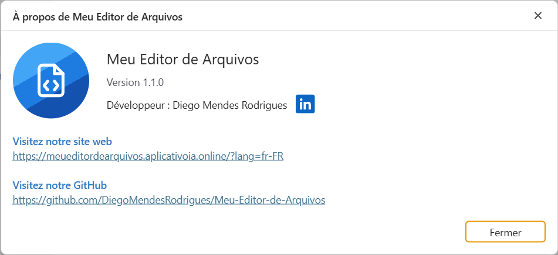
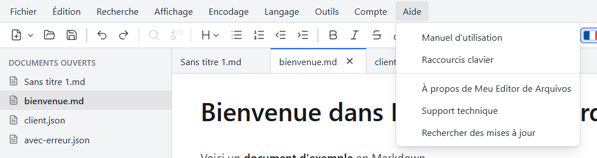
Meu Editor de Arquivos a été développé par Diego Mendes Rodrigues. L'élément Support technique du menu Aide n'est pas encore disponible dans cette version.